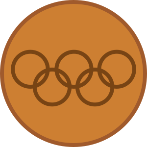
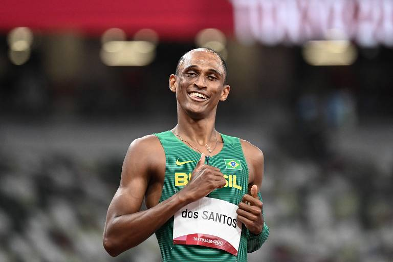

Modalidade individual
-
Judô
O Judô brasileiro conquistou várias medalhas ao longo dos anos. Confira as conquistas da nossa equipe nas Olimpíadas.
Categoria 

 
Judô 4 4 18 26 -
Vela
A Vela brasileira também trouxe diversas conquistas ao longo das edições olímpicas. Veja os detalhes abaixo.
Categoria Vela 8 3 8 19 -
Atletismo
O Atletismo é uma das modalidades mais tradicionais dos Jogos Olímpicos. Confira os resultados brasileiros aqui.
Categoria Atletismo 5 3 11 19 -
Vôlei de Praia
O Vôlei de Praia tem sido uma das modalidades de destaque para o Brasil nas Olimpíadas. Veja as medalhas conquistadas.
Categoria Vôlei de Praia 3 7 3 13